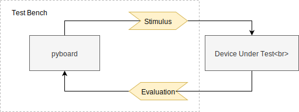

Wire Tester¶
This is the first example to introduce hardware to our test-bench.
In this case, we’ll pretend that our product is the simplest electronic device possible; a single wire.
To test that our “product” does what it’s designed to do, we will verify that it will carry a voltage from an output to the input it’s connected to.
Bench Setup¶
All test environments could be generalised as the following diagram:
Defining the boundary; the scope of the test environment is often a much bigger discussion than this diagram gives credit for. For the purposes of our “product” test:
- Device Uner Test : our “product” (a wire, or 200Ω resistor [1])
- Stimulus : a socket for one end of our wire (pyboard pin
X8) - Evaluation : a socket for the other end (pyboard pin
X9)
| [1] | If you’re concerned about shorting something out while you’re playing around. Connecting a 200Ω resistor between the 2 GPIO ports will pass the test, and limit the current to below the GPIO’s maximum. |
Stimulus/Evaluation vs Ouput/Input ?¶
Why do you use the terms “stimulus” and “evaluation”, when it would be easier to just say “output” and “input”?
Test environments are often discussed from 2 opposing contexts: one being the product itself, and the other is the test bench. This means that every time the term “input” or “output” is used, we can only understand the relevance between the 2 if we also know what it is relative to.
This can frequently lead to confusion; a problem the terms stimulus and evaluation do not have.
Socket class¶
Similar to Switch in Switch Evaluation, we’ll create a
class used to stimulate and evaluate a single pin, described more
physically as a “socket”.
class Socket(object):
def __init__(self, device, pin, mode, value=None):
self.device = device # PyBoard instance
self.pin = pin # pin name (eg: 'X1')
self.mode = mode # 'stim' or 'eval'
# Initialise Pin
self.device.config_pin(
id=self.pin,
mode='out' if (self.mode == 'stim') else 'in',
pull='down',
value=value,
)
@property
def value(self):
return self.device.get_pin(self.pin)()['v']
@value.setter
def value(self, v):
self.device.set_pin(self.pin, v)
BenchTest class¶
class BenchTest(unittest.TestCase):
PIN_MAP = {
'STIM_SOCKET': 'X8',
'EVAL_SOCKET': 'X9',
}
@classmethod
def setUpClass(cls):
# PyBoard device(s)
cls.pyb_a = upytester.project.get_device('pyb_a')
# Simulation / Evaluation Bench Components
cls.wire_stim = Socket(
device=cls.pyb_a,
pin=cls.PIN_MAP['STIM_SOCKET'],
mode='stim',
value=0,
)
cls.wire_eval = Socket(
device=cls.pyb_a,
pin=cls.PIN_MAP['EVAL_SOCKET'],
mode='eval',
)
@classmethod
def tearDownClass(cls):
cls.pyb_a.close()
Pin Mapping
The PIN_MAP dict is used to map pins to an intuitive name
so they may be referenced while configuring the bench.
This is highly advisable so you can assess your GPIO budget for the bench in one place. Larger bench environments would use a whole module for this purpose; condencing everything in to one file.
Could I connect the wire between 2 pyboards?
Yes, absolutely!
Stimulus and evaluation as described above is done on a single pyboard. However, this test could just as easily be done with stimulus on one pyboard and evaluation on another pyboard with a common ground.
Test Case¶
Like any well designed test-bench, the test iself is the simplest part:
class WireTest(BenchTest):
def test_wire_low(self):
"""
Signal connected as LOW
"""
self.assertFalse(self.wire_stim.value)
self.assertFalse(self.wire_eval.value)
def test_wire_high(self):
"""
Signal connected as HIGH
"""
self.wire_stim.value = 1
self.assertTrue(self.wire_stim.value)
self.assertTrue(self.wire_eval.value)
self.wire_stim.value = 0 # revert at end of test
If you disconnect the wire ([cough]… sorry, the “product”), you should see
test_wire_low pass (because the evaluating pin is pulled low), and
test_wire_high fail.